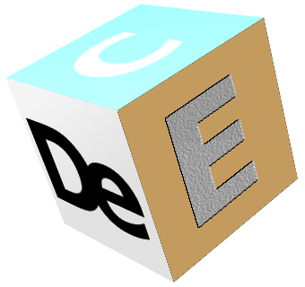

June 15 (2020)
Kawano Toshihiko
Los Alamos National Laboratory
DeCE is an ENDF-6 formatted file manipulation program, similar to STANEF by C.L. Dunford et al. (BNL), or FIXUP in PREPRO by D.E. Cullen (IAEA), but probably the closest to CRECTJ6 by T. Nakagawa (JAEA), as some data manupulation can be performed interactively.
In this manual, the word ENDF-6 file is often used. This does not refer to a particular name of libraries, like ENDF/B-VI, but a data file which is in the ENDF-6 format in general.
In general, one data file (or the so-called tape) can contain more than one materials, in which each of the materials is specified by a different MAT number. However, DeCE expects that an input ENDF-6 file includes only one MAT number.
DeCE is capable for doing the items below. Here the word "section" means a data block specified by a combination of MF and MT numbers.
DeCE is written in C++, and it has classes, ENDF and ENDFDict, which provide interface to the ENDF-6 specified data structure. The ENDF class is designed to be general so that it can be used in other user utility programs. This package offers some examples to use the ENDF class in the example direcrory.
The development of DeCE began in Dec. 2009. At each major update, a new code name like, Talc, Gypsum, and Calcite, was given. They are known as "the Mohs scale of mineral hardness." The code was originally developed as a program E-Type, which was a converter program from the Hauser-Feshbach model code output into the ENDF-6 formatted data, first appeared in Summer 2009. This was totally superseded by DeCE. The current version, first built in Dec. 2019, is Rutile, whose Mohs scale is 6 - 6.5.
All versions up to DeCE (Fluorite) were just for the author's private use. Apatite is the first version of outside release (yet limited to the lab internal use). This version comes with some documents. Turquoise is a stable version of Apatite, including many bug fixes. Adularia, which was built in 2015, has several upgrades in the resonance region. DeCE was released as open source software in 2016. In 2019 the source code was re-organized aiming at better readability, and released as the version Pyrite. Some test cases are also provided in this version. In winter in the same year, some minor updates were made, and released as the version Rutile.
DeCE: the ENDF-6 data interface and nuclear data evaluation assist code
Toshihiko Kawano
Journal of Nuclear Science and Technology, vol.56, issue 11, pages 1029-1035 (2019)
https://doi.org/10.1080/00223131.2019.1637797